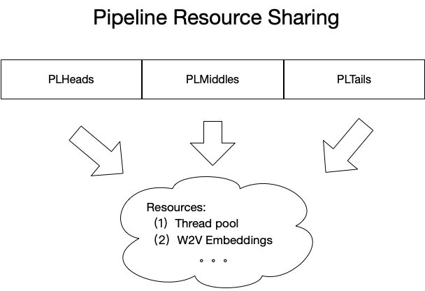

User Manual¶
The users only need 3 steps to adopt Algorithm Components library in their own applications.
- Format input data into AUCImprAttrs structure (protobuf format).
- Define a few configuration files with attribute transforms, feature transforms and model predictions.
- Write a few lines of code to load the configurations and apply the predefined efficient transforms.
Step 1: Format input data¶
In our designed system, the data has 3 statuses throughout lifetime: attribute data, feature data and encoded data.

We represent the attribute data and feature data with 2 protobuf format structures: AUCImprAttrs and AUCImprFeats. We define these structures in a separate library (i.e., data-model-protobuf). Hence the user’s first step is to format the application data into attribute data (i.e., AUCImprAttrs). And the library will take over the rest of work. Here is a detailed description of Data Model.
Step 2: Define transform configurations¶
The next and also one of the most important things is to define a few configuration files. These configurations tell the Algorithm Components library in which way to organize the pipeline.
In our design we breakdown a complete pipeline into 3 components: PLHead, PLMiddle and PLTail. Each one has its own skill which is demonstrated as follows.

The configuration files define the pipelines in top-down mode. The lower things (e.g., thread pool, attribute transforms and feature transforms) can be reused many times. Here is a detailed example (the files are located in test/test-data directory).

Step 3: Write a few lines of code¶
In the last step, the users only need to write a few lines of code to load the configurations and apply the predefined pipelines to data. The following is an example which is adopted from app/src/algocomp_eval_time.cpp.
// Initialize logger
string logger_name = "algocomp_app_eval_time_logger";
string logger_dir_name = "algocomp_logs/app_eval_time";
string logger_file_name = logger_dir_name + "/log";
auto logger_dir = fs::path(logger_dir_name);
if (fs::exists(logger_dir)) fs::remove_all(logger_dir);
fs::create_directories(logger_dir);
ACLog::create_loggers(logger_name, logger_file_name);
// Initializer pipeline component pool (load configurations)
auto pool = PLCompPool("test/test-data/1-pipeline.xml");
auto pl = pool.get_pipeline("pl-1");
// Read input data
std::ifstream in("test/test-data/encoded_attributes.txt");
string line;
std::getline(in, line);
string attrs_pb;
Base64::Decode(line, &attrs_pb);
in.close();
// Apply predefined pipeline (transforms) to data
auto encoded = pl->head_to_middle(attrs_pb.c_str(), attrs_pb.length());
Here is another example with Java as invoker language (can from Hadoop streaming or Flink) since we wrap the Algorithm Components library with Swig.
// Load dynamic library
final String dir = System.getProperty("user.dir");
System.load(dir + "/bin/libalgocomp_swig.so");
// Initialize logger
String exampleLoggerName = "java_wrap_logger";
String exampleLoggerFile = "algocomp_logs/java_wrap/log";
ACLog.create_loggers(exampleLoggerName, exampleLoggerFile);
// Read input data
String line = "";
BufferedReader reader;
try {
reader = new BufferedReader(new FileReader(dir + "/conf/encoded_attributes.txt"));
line = reader.readLine();
reader.close();
} catch (IOException e) {
e.printStackTrace();
}
// Parse input data to protobuf string
byte[] attrStr = Base64.getDecoder().decode(line);
AUCImprAttrs attrs = AUCImprAttrs.parseFrom(attrStr);
byte[] attrsPB = attrs.toByteArray();
// Initializer pipeline component pool (load configurations)
PLCompPool plPool = new PLCompPool(dir + "/conf/pipeline.xml");
Pipeline pl = plPool.get_pipeline("pl-1");
// Apply predefined pipeline (transforms) to data
StrVec encoded = pl.head_to_middle(attrsPB, attrsPB.length);
Additional information: Resource Sharing¶
All the bottom things are basic resources like thread pool, w2v embeddings, etc. They will be shared across the upper things.
